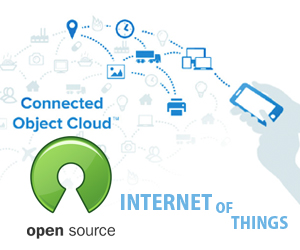

The Customized Global M2M Solution
The Customized Global M2M Solution
 Certainly, the Internet of Thing goes beyond connected television, surveillance cameras, smart gadgets and wearable technology. And as the adoption of the Internet of Things increases and becomes widespread in several different markets, issues on its lack of interoperability and integration cost have been raised along with its consistent escalating growth. Nonetheless, innovators from all over the world try to create different solutions such as Hypercat, in an attempt to bridge these gaps. At the IoT 2014 Conference held in Singapore, Juha Lindfors, Co-founder of OpenRemote USA, spoke about a case study on Open Source Approaches to IoT Solutions. During the presentation, Linfords pointed out three points that prove the value of this openness in ensuring the success for the IoT – Interoperability, Integration and Ecosystem.
While it is true that the IoT revolves around the concept of having devices that intelligently discovers its environment and enables it to program itself to interact with other devices in its surrounding, and as amazing as this concept may seem, it is equally frustrating that there is a lack of API's and standards today, which makes it difficult to get devices to work together. Unlike the concept of the Internet, which was built on the principle of openness that makes it successful, the Internet of Things today lack this kind of interoperability because it is not built on the principle of openness. The Internet is successful because of the joint efforts of the Internet Engineering Task Force, a non-profit organization that helps develop and promote internet standards such as the Internet Protocol Suite, which allows interoperability at a network level. The World Wide Web Consortium also provides application interoperability for the Internet through HTML standards, Web browser and other internet applications that work together.
According to Lindfors, it seems odd that things are attached to the internet, but it does not completely embody the same principle. Instead of building an Internet of Things, what is built today are "Silos of Things". He further pointed that with these, nothing works across different silos. The first generations of IoT devices are built on different platforms, and users would need to look for the individual apps that make each device work. Therefore not adding value to the customer's experience. To alleviate this problem, and enhance customer experience, companies such as OpenRemote, takes the common pieces of these devices and share it to an open source. It serves as a common Lego block that allows a level of interoperability between these devices, leaving only the codes that are very specific to the device itself.
And due to the lack of interoperability, solutions providers need to find ways to integrate these devices to create a certain degree of interoperability among them, integrating from device to device, model to model and sometimes vendor to vendor. Device standards must also need to be considered, whether a particular device operates on z wave, ZigBee or IP, among others. Lindford says that integration works, however it is expensive as it entails intensive work thereby adding more to cost. The cost of integration depends on the kind of project. For instance, smart cities are are less cost-sensitive as it is done once with a particular target city and a certain budget to work on. However, integration targeted at consumers such as assisted living for Alzheimer patients is highly cost-sensitive, as there may be a need to go house to house and integrate different brands, models and kinds of devices that are used to alert families, doctor and care providers. Having these kinds of integration is expensive and harder to build, according to Lindfors.
A healthy ecosystem that embraces this kind of openness is necessary. The main objective of this kind of ecosystem is to remove barriers, especially when entities need to collaborate. It will remove the wall of lawyers between these entities and enable a more seamless collaboration that does not require legal documents. "Standardizing on an open model helps get work done", Lindfors said.
Building this kind ecosystem will bring more diversity and more innovations from people, to the Internet of Things. An empowered ecosystem should also have different services built around the product.
"It is important because IoT is not just about selling things, but also about selling services" Juhan Lindfors said. He further added that software is never perfect, therefore a service model where developers and manufacturers can provide updates and patches is critical. This should give developers and providers a means of patching, updating or creating their line of service offerings around the product. Right now, embedded computers are riddled with vulnerabilities and there is no good way to patch them. If the systems are closed and there are vulnerabilities in the software, there is no way to fix them other than to throw them out and buy another one. But if manufacturers keep asking consumers to buy new equipment due to these problems, customers will lose trust in them.
© 2013 Parlacom, All Rights Reserved


 English
English Portuguese
Portuguese